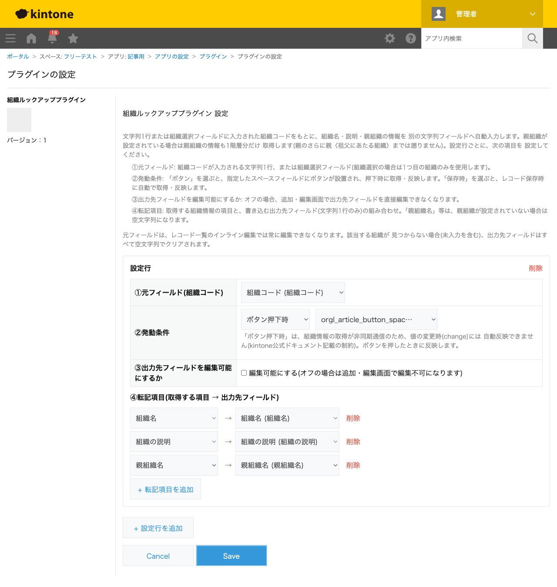
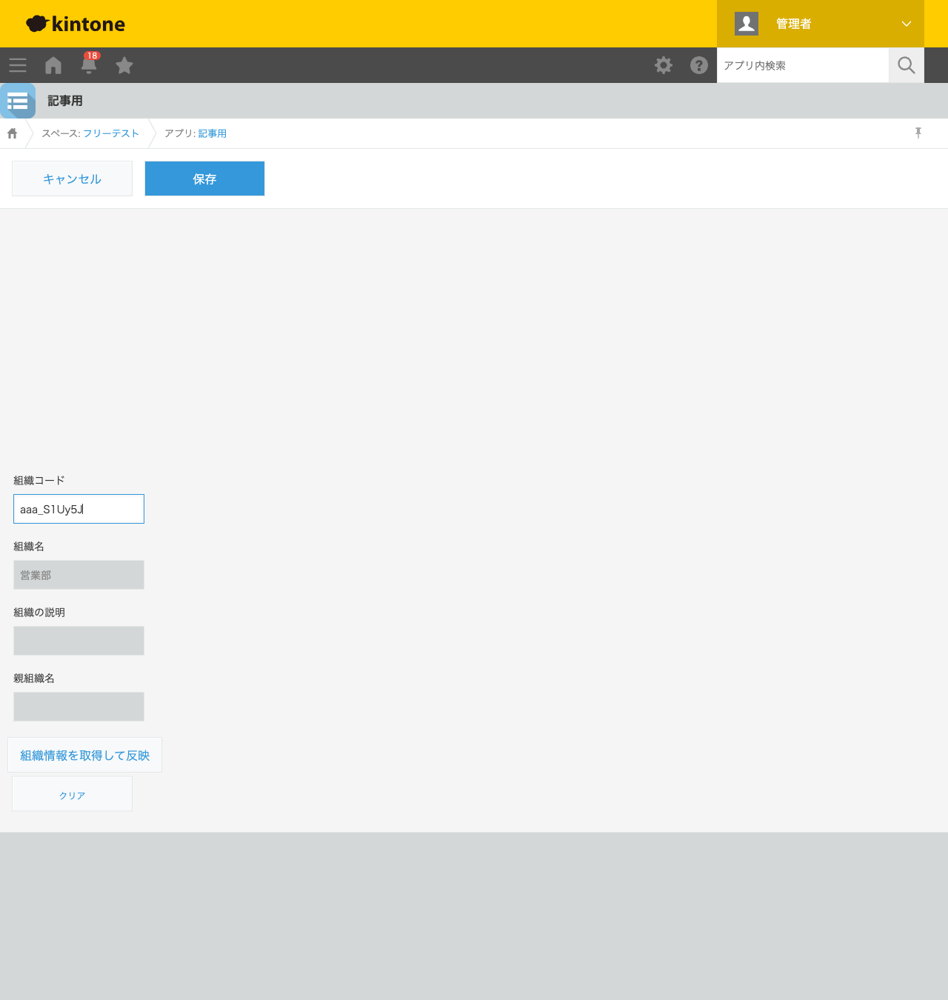

GovAppsプラグイン 安全性を確認できる無料kintoneプラグイン集
申請書や台帳アプリに「所管課コード」のような組織コードを入力する運用で、組織名を毎回手入力 していると表記ゆれや入力ミスが起きがちです。この記事では、無料プラグインで組織コードから 組織名・説明・親組織名を自動入力する方法を、実際の設定画面と反映結果つきで解説します。
→ 対応プラグインを見るkintoneの標準機能には組織選択フィールドがあり、組織そのものを選ぶことはできますが、 「文字列で入力した組織コードから組織名を自動的に転記する」機能は標準にはありません。 組織コードを外部システムやマスタ台帳と連携させたい場合、組織名は別途手入力するか、 組織選択フィールドの値をコードとして扱うか、いずれかの妥協が必要になります。 JavaScriptカスタマイズを自作すれば、Organization API(User APIと同系統)を呼び出して 実現できますが、親組織を1階層だけ遡る処理や該当なし時のクリア処理まで含めると、 簡単な作業ではありません。
「組織コードから組織名を自動転記する」機能を用意する方法は、大きく4つあります。それぞれの 向き不向きをまとめました。
| 方法 | 向いている場合 | 注意点 |
|---|---|---|
| kintone標準の組織選択フィールドのみ | 組織名を文字列として別管理する必要が無い場合 | 外部の組織コード体系との連携には使いにくい |
| JavaScriptを自作する | 社内に開発者がいて、独自の転記項目・階層要件が多い場合 | Organization API呼び出し・親組織の遡り処理の実装・保守が必要 |
| 有料の他社プラグイン | 予算があり、手厚いサポートを求める場合 | 月額課金が発生する。ソースコードが非公開で、外部通信の有無を利用者側で確認しにくいことが多い |
| GovAppsプラグイン(このプラグイン) | 無料で試したい、社内・庁内でセキュリティを確認してから導入したい場合 | 親組織は1階層のみ(祖父にあたる組織までは遡らない) |
GovAppsのプラグインはすべて無料・広告なしで、追加課金なしで使い続けられます。 ソースコードはGitHubで全公開しているオープンソースなので、 「本当に外部と通信していないか(kintone自身のUser API/Organization API以外は呼んでいないか)」を 自治体・企業のセキュリティ担当者自身の目で確認できます(このプラグインも個別ページにセキュリティレビュー結果を掲載しています)。
組織ルックアッププラグインは、元フィールド・発動条件・転記項目を 設定するだけで、組織コードから組織情報を自動入力します。今回は「組織コード」「組織名」 「組織の説明」「親組織名」(いずれも文字列1行)を持つアプリで設定しました。

レコード追加画面で組織コードを入力し、「組織情報を取得して反映」ボタンを押すと、 Organization APIから取得した組織名が組織名フィールドへ自動的に反映されます。 出力先フィールドは既定で編集不可になっており、手入力による上書きを防ぎます。

該当する組織が見つからない場合や組織コードが未入力の場合、出力先フィールドはすべて空文字列で クリアされます。親組織が設定されていない組織の場合、親組織名の欄も空のままになります。 「クリア」ボタンを押すと、元フィールド・転記先フィールドをまとめて空にできます。
kintone.api()経由)を使っています。外部サーバーへの通信は一切ありません。